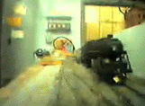
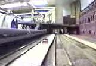
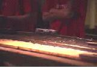
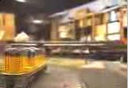
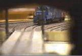
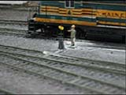
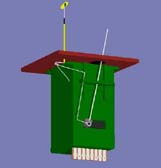
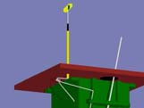
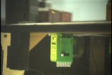
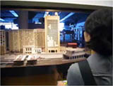

|
|
| Title | Description | Preview |
|---|---|---|
| MITCo, three times. First from a high level, next from street level, finally from motorman's eye view. The overhead wire is not quite complete, so the trolley pole is lowered. Video from April 2007. (4:08) | ||
| Video of the current layout, circa 2005. This video was taken during an open house, whcih explains all the visitors, and includes some video from one of our camera cars. (4:29) | ||
| Old clubroom midways | Another movie of the old clubroom rescued from videotape. The first half is from May 6, 1995, and the second half from December 2, 1989. 40 MB download. | |
| TMRC room | James Knight created this Quicktime VR look into the clubroom in March 2001. There are eleven locations you can get to by clicking around. Make sure you let the video load fully, as it won't let you move around until then. (Pressing the "Show how spots" button will help you find the places you can click) | |
|
Grandson of Cabs's Eye View (approx 7min) Download. 450kbps, 320x240, 15fps, 42MB |
A video taken with TMRC's new camera car on 8/20/2000!
After a lot of work from Jared & Vicky, with Alvar's help, and thanks to
Ben's tutorial on how to improve the quality of the videos, it is here: TMRC's Grandson of Cab's Eye View. The video transverses the complete layout, starting at the Gifford side of Staging Yard it goes to the Gifford City bypass, and out the "West" end of Gifford to the rest of the world. It goes right by 105th Street, also on the bypass track, and then towards Freight Yard... but turns around The Tower since FY is not there yet! And back it goes to 105th Street, now making a schedule stop. After the short stop it continues back to Gifford City for another stop; but before that is passes right next to The Aaron Burr, TNP's top passenger train. After a stop at Gifford City Grandson continues "East" and goes back to Staging, all around, and back to the starting place. |
 |
|
Re-encoded Cabs's Eye View (Quicktime 4 format) |
This video was re-recorded from the old cabs-eye-view VHS tapes. It is much nicer quality than the RealVideo version below, but is mostly the same material. |  |
| Cabs Eye View (56kbps) (28.8kbps) | This footage was shot at the old club room just before the layout was disassembled. We used a home made camera car followed by a battery car, and an engine. The video was then encoded into RealVideo for web use. | |
| Building 20 Presentation | This video was transmitted live over the internet during TMRC's presentation as part of the ceremony "Building 20: the Magical Incubator" by MIT's EECS department, and a copy is now available. |  |
| New CabsEyeView | This is a short video of a cabs eye view entering the turntable in the new layout. It shows the tower, the surronding track, and the turntable. It was taken with a camcoder on a flat car. |  |
| New Turntable | A new video of the turntable installed in the new layout. This video is taken with a standard camcoder, looking from the back of the turntable. |  |
| Switchstand | A video (AVI format) of the operating switchstand made by John Purbrick. Filmed by Tom O'Reilly. |  |
| Switchstand animation 1 | An animated GIF of the switchstand, showing how it works. This was derived from a POV-Ray file. POV-Ray (Persistence Of Vision Ray tracing) is a public-domain program which allows rendering of visual scenes. It's lots of fun--and highly addictive! |  |
| Switchstand animation 2 | The same animated GIF, but this time showing a closeup of the helical cam which is the key component of the mechanism. |  |
| Quicktime format (6.4 MB) | A video of the new switch stand in Middle Heights, showing the operation of the switch stand from above the layout, below the layout and both at once. |  |
| Flash format, size unknown, but it's good-quality video. |
Somebody took a video of our Tetris game! Played on our model of the Green Building, the tallest structure at MIT. Note: this movie isn't our property, so we can't promise it'll be available forever. |  |
|
Tech Model Railroad Club of
MIT Room N52-118 265 Massachusetts Avenue Cambridge, MA 02139
|
+1 617 253-3269 Email: tmrc-web@mit.edu |
{kind=link}
{kind=link}